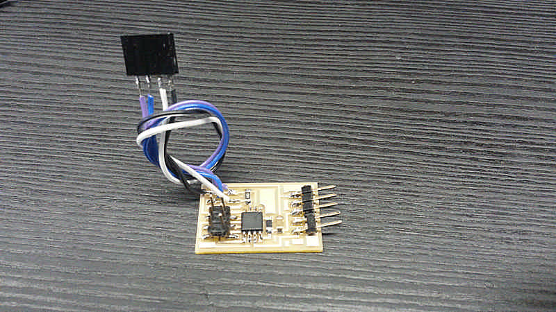

David Montenegro
FAB ACADEMY 2015
Final Project | Assignments | Download | About | Contact
04_08 Input devices
On wednesday 04.08.2015 we’ve got the tenth online lesson with Neil Gershenfeld.
The next lessons can be found on the Fab Academy account on Vimeo.
For this week the assignment was
** measure something: add a sensor to a microcontroller board that you’ve designed and read it **
For this assignment I’m going to make a step response board starting from the hello.load.45 board provided by Neil.

Fabrication
I milled the board and soldered the components.
As usual:
- n1 ATtiny45: easy and cheap, it’s enough as pins and flash for many exercises
- n1 1uF capacitor to stabilize incoming current to the micro
- n1 10kOhm resistor as a pull up on the Reset pin, so it can be flashed
- ISP to flash it
- FTDI to serial communications and provide voltage

For the specific purpose there are:
- an output line called ‘shield’ that provides power to the sensor and charge it like a capacitor
- an input line called ‘sense’ to read when the tension drops down
- a big resistance (1MOhm) to read a value; increasing the value of this resistance improves the sensitivity of the sensor
- a thin metal surface to use as sensor/human interface; increasing the surface improves the accuracy of the sensor
When I came to solder the pull-up 10k resistor I realize that there is not any, so I used a 49.9k resistor, but when I came to flash the board the avrdude gives me this error message:
avrdude: initialization failed, rc=-1
Double check connections and try again, or use -F to override this check.
When I checked the traces with the tester I noticed that a very tiny droplet of solder was between two ISP pins; once removed it works. It may always happen no matter how may cares you take: check and debugging is not an option, it’s a routine.
Flashing
As usual, with make file
sudo make program-usbtiny
If you’re using a virtual machine always check first that the usb-programmer is connected. I used the .c file provided by Neil.
Measuring
I used a 15x15cm steel pad as a sensor. I connected the shield and the sense pins of the board to the pad: the first one(blue)charge it while the second one (white) read the drop of the voltage.
I used the hello.step.45.py code to measure the behaviour of the sensor.
To know what serial port uses connect the board via FTDI and type in the terminal:
ls /dev/tty*
and find what USB port is in use (usually USB0).
To launch the program open the terminal inside the folder that contain the file and type:
sudo python hello.step.45.py /dev/ttyUSB0
to set what port use.
The readings are very inconstant at first attempt; detaching the power chord of the PC it turns perfectly steady measuring values, on a 0-1024scale from a max of 950~970 when it’s just in contact with the table, to 650~550 when I press the palm of my hand over it.
Instead of a metal plate I tried also use a common copper wire wrapped on a 100x8mm bolt as sensor, I wonder how may work a linear sensor instead of a surface.
When I came to make this test (two days later) the interface was still, none of the bars moved and no data was apparently being collected.
What may not work properly? What can I check?
- FTDI-USB adapter: both SO and virtual machine recognize and activate the FTDI device; Tx and Rx leds blinks when the board in connected.
- USB cable: I tried some, but nothing has changed.
- the board: I re-flashed the board and it flashes as usual, so I think it’s ok.
- sensor lines: I checked both ‘shield’ and ‘sense’, but the bars remain perfectly still
- Python application: nothing has been changed in the code; anyway I downloaded the code once again, rechecked the serial port and launched it; the bars remains still and to close the window I’ve to use ‘Ctrl+C’ from terminal instead of ‘q’.
As last try I used a different FTDI cable, a TTL-232R, and finally it works, but I don’t know why.
Testing the wire wrapped around the bolt is seams it (obviously) works to, but it’s far less sensitive: when I keep it in my hand its gap between min and max is about 200; it’s a different geometry that can be used for different applications.
It’s interesting to notice that even with the line not connected to a sensor the app never reach the 1024 value and stops around 999~1001.